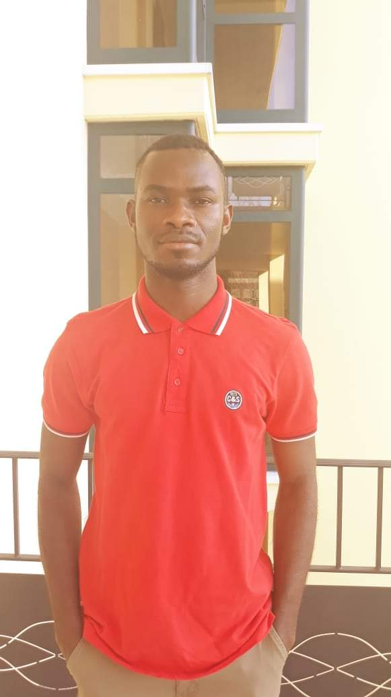

About Me
Please click the button below to know a little about me.

Company Name
Classified Liberia - LTD
Position
Computer Technician
Location
Monrovia - Liberia
Year
2015 - 2016
Task & Responsibilties
* Was responsible to maintain, install, and trouble-shoot all the office computers, and make sure they are in good condition
Company Name
Prince Roz Career Center
Position
Computer Hardware Techician
Location
Grand Bassa County - Liberia
Year
2014 - 2015
Task & Responsibilties
* Was responsible to repair Desktop computers in the Career Center
Company Name
Ministry of Youth & Sports
Position
Computer Hardware Instructor
Location
Bomi County, Tubmanbury City - Liberia
Year
2012 - 2013
Task & Responsibilties
* Was tasked with the responsibilities to teach the youths on how to repair, install, maintain, troubleshoot and to fix common computer hardware and software problems